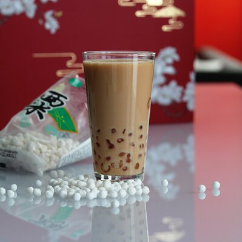

Boba Milk Tea

Description
Boba tea, or bubble tea, is a popular drink that originated from Taiwan. We will be following instructions on how to make some delicious boba.
Ingredients
- Some cold water
- Some packaged tapioca starch balls
- Some brown sugar
- Some white sugar
Steps
- Boil the water in a large pot. Pour in the tapioca and simmer for 25 minutes. Stir occasionally to prevent sticking. Remove from heat and let balls sit in water for 25 minutes
- Return pot to the heat. Simmer and stir for 25 minutes more. Remove from heat and let rest again until centers of the balls are no longer powder, another 25 minutes. Drain.
- Combine brown sugar and white sugar in a large bowl. Pour tapioca balls into the sugar mixture. Cover with a damp cloth and let rest for 15 minutes while preparing the tea.
- Scoop some tapioca into your mixed tea of your choice. Enjoy with large straws to suck up the tapioca, or use spoons.